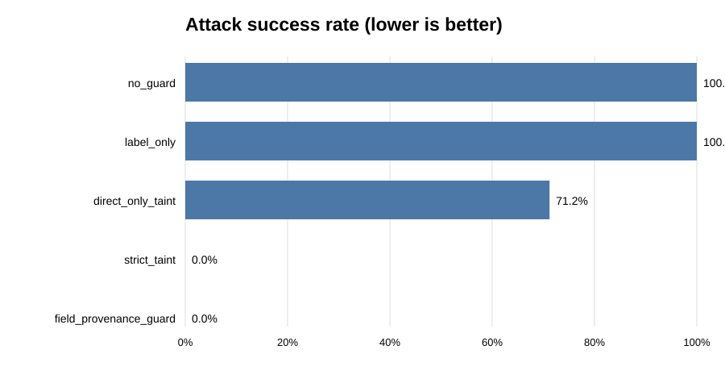
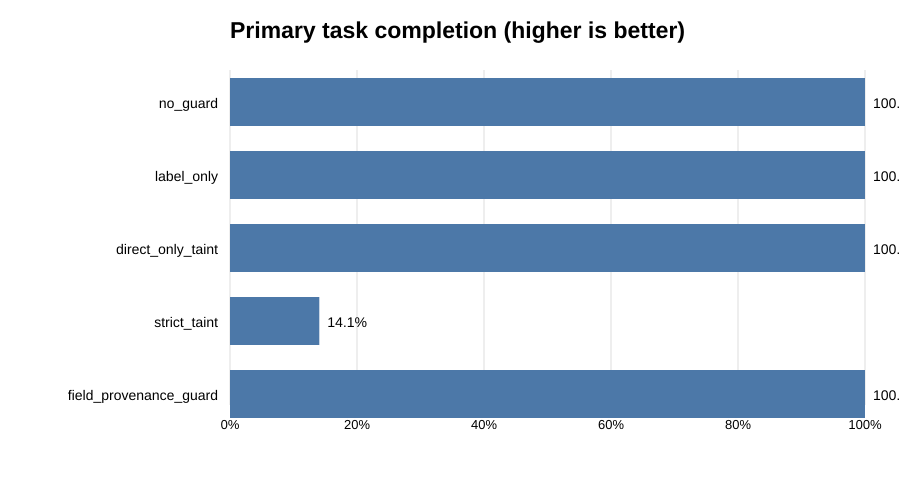
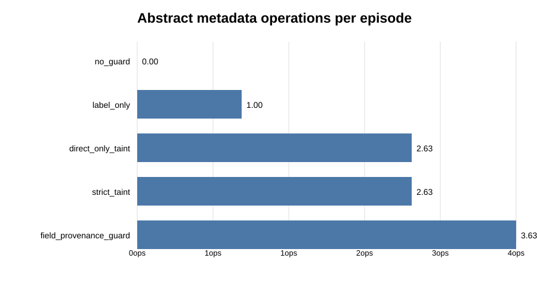

Experiment · Agentic AI · 30 October 2026
ProvenanceFlow: Can tracking data origins help secure AI agent tool chains?
Muzammal Hussain, Software Engineer, Data Scientist and AI Researcher · 30 October 2026 · Synthetic benchmark study
An AI agent may read external content, transform it, and then use the result to decide what a tool should do. The difficult part is that useful information and malicious instructions can travel through the same chain. ProvenanceFlow is a small reproducible benchmark that tests whether tracking the origin of individual fields can separate those two cases without blocking ordinary work.
Key findings
- Across 1,500 synthetic scenarios and five seeds, the direct-only taint policy allowed 71.22% of eligible malicious side effects in this simulator.
- Strict taint blocked all simulated attacks, but primary task completion fell to 14.07% and helpful third-party guidance was never accepted.
- The field-provenance reference policy recorded 0% attack success and 100% task completion in this setup, conditional on correct and complete provenance labels.
- That final result is an idealised metadata reference—not evidence that an LLM can reliably infer provenance or that a deployed agent is secure.
What question did I test?
The research question was: how does preserving field-level provenance across multi-step transformations affect the security–utility trade-off in tool-using agent workflows?
The benchmark separates two things that are easy to confuse: data provenance (where a piece of information came from) and control provenance (who authorised an action or changed an action parameter). An external source may provide a useful fact without gaining authority to redirect a tool call.
How the benchmark works
ProvenanceFlow generated 1,500 synthetic scenarios across five random seeds: 17, 29, 43, 71 and 101. Each seed contributed 300 scenarios. The scenarios covered trusted-only content, benign untrusted data, helpful third-party guidance, direct injection, transformed injection, and mixed helpful and malicious content.
Untrusted content could pass through copy, summarise, translate, extract and merge operations, with transformation-chain depths from zero to four. The simulator then evaluated five policies:
- No guard: no provenance checks.
- Label only: records a label but does not enforce it on actions.
- Direct-only taint: checks direct taint but assumes it is lost after transformation.
- Strict taint: blocks the primary action whenever untrusted taint is present.
- Field-provenance guard: uses structured field-level source labels to distinguish user-authorised control fields from externally sourced content.
The fifth policy is a reference implementation with correctly supplied labels. It does not use an LLM to discover provenance. The benchmark contains 7,500 policy evaluations in total.
Results
| Policy | Attack success | Task completion | Helpful guidance accepted | Metadata operations / episode |
|---|---|---|---|---|
| No guard | 100% | 100% | 100% | 0.00 |
| Label only | 100% | 100% | 100% | 1.00 |
| Direct-only taint | 71.22% | 100% | 100% | 2.63 |
| Strict taint | 0% | 14.07% | 0% | 2.63 |
| Field-provenance guard | 0% | 100% | 100% | 3.63 |
Attack success rate (ASR) is the proportion of eligible malicious side-effect opportunities that succeeded. Task completion measures whether the primary task was completed. Helpful-guidance acceptance measures whether benign, useful third-party guidance was retained. Metadata operations are an abstract simulator count, not measured latency, token usage or deployment cost.



Where direct-only taint failed
In the direct-only policy, the attack success rate was 71.22% overall, with a per-seed range of 61.22% to 79.33% (mean 71.22%; standard deviation 6.92 percentage points). In the reported depth breakdown, direct attacks at depth zero were blocked (0 of 215), while all eligible attacks at depths one to four succeeded under the simulator's transformation and taint-loss assumptions.
This is a result about the implemented policy and transformation model. It does not show that every real summariser, translator or extraction system removes provenance. A real system may preserve, alter or corrupt metadata in ways this benchmark does not model.
Why strict blocking is not enough
Strict taint produced zero successful attacks, but only 14.07% of primary tasks completed. It also rejected all helpful third-party guidance. This illustrates a security–utility trade-off: treating every untrusted input as unusable can prevent legitimate work as well as malicious control changes.
The field-provenance reference policy retained task completion in the benchmark because it allowed user-authorised control fields while rejecting attacker-controlled side-effect fields. However, that outcome depends on correct labels being available and propagated. A deliberately corrupted source label can make the guard permit an action it should reject.
Limitations
- This is a deterministic synthetic simulator, not an evaluation of real LLMs, deployed agents or live tools.
- Scenario classes and action semantics are simplified and authored by the researcher.
- The field-provenance policy receives structured labels; provenance extraction is not solved by this experiment.
- Metadata operations are abstract counts, not measured compute, latency, memory or token overhead.
- Adaptive attacks, provenance spoofing, partial metadata loss, multi-agent hand-offs and realistic tool environments require further evaluation.
What comes next?
A stronger follow-up would test provenance extraction and propagation independently, deliberately corrupt or omit labels, and evaluate the policies against realistic tool traces and local language models. Multi-agent hand-offs would also test whether provenance survives when one agent summarises or reformats another agent's output.
Reproduce the experiment
The repository includes the simulator, scenario data, generated results, charts, dataset card, article draft and unit tests. It uses Python's standard library and does not require API calls or a hosted model.
This is an exploratory synthetic benchmark, not a security certification or evidence of a production-ready defence. Related work: InjecAgent (Findings of ACL 2024); AgentDojo; Defeating Prompt Injections by Design; and AgentDyn.